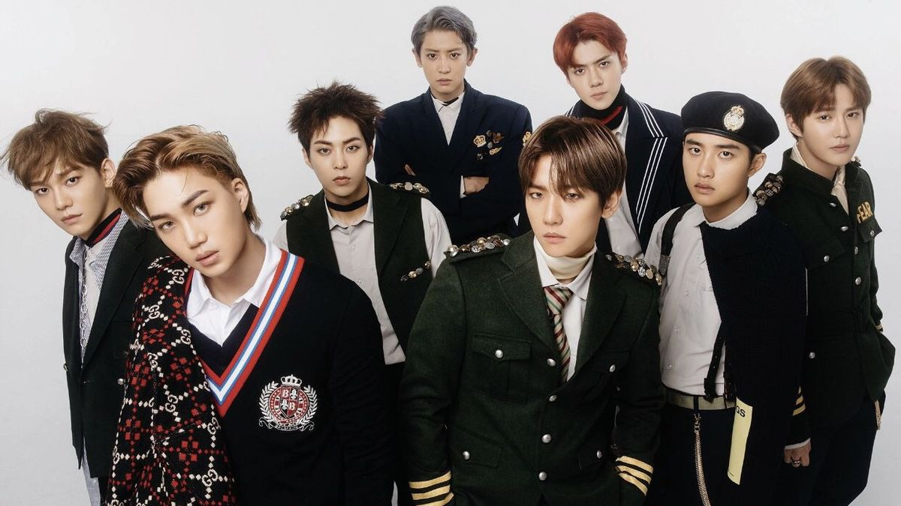
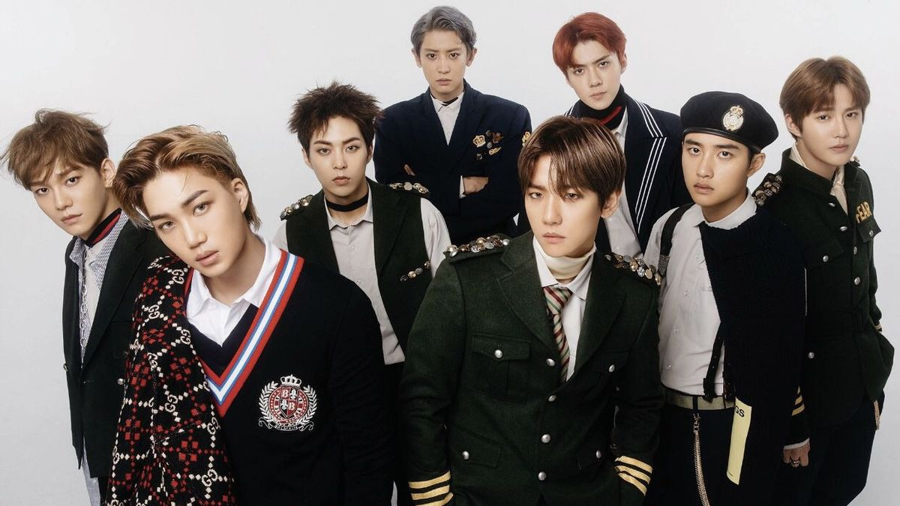
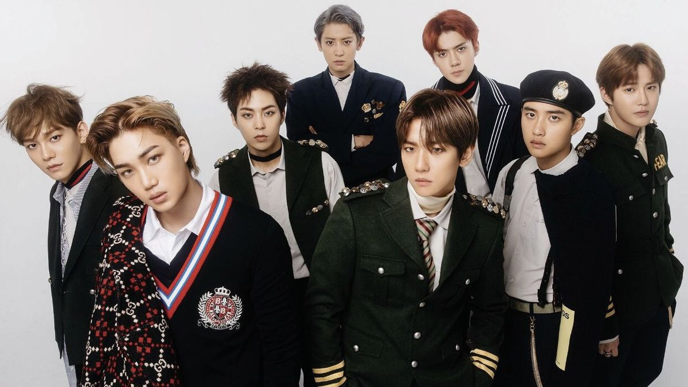

Thanks to Psy's breakthrough, K-pop caught the eye of the world, leading to a wave of new groups debuting. From BTS and Twice to BlackPink and Exo, these acts skyrocketed to fame over the years, fueling the genre's global expansion.
These groups churned out hit after hit, shattering records and bagging prestigious awards. Their music videos became spectacles, featuring intricate concepts, stunning outfits, elaborate sets, and mind-blowing choreography. They didn't stop at music; they ventured into acting, fashion, and became the faces of luxury brands.

Social media became the go-to platform for idols to connect directly with fans. Fancams, capturing idols' stage performances, became a sensation. And every group had its own official lightstick for fans to wave proudly at concerts.
BTS, in particular, took the world by storm. Starting from humble beginnings under BigHit Entertainment, they exploded in popularity around 2015. Their fan base grew to astronomical proportions, rivaling the populations of entire countries.